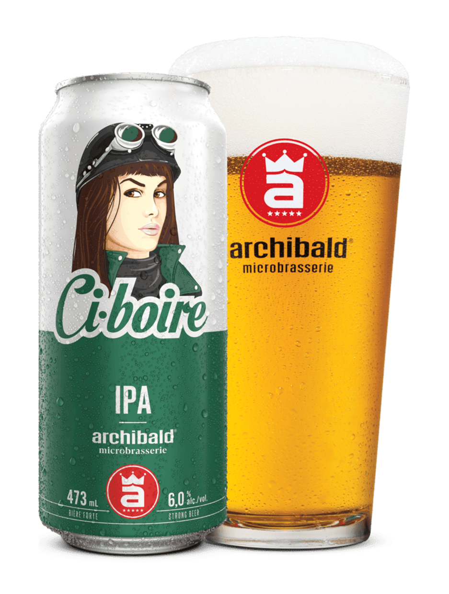

CI-BOIRE
Une sacrée bonne bière
À l’origine, ce type d’ale
anglaise fut conçu pour résister aux longs voyages de
ravitaillement entre l’Angleterre et les troupes cantonnées
aux Indes. Subtile en caramel et en malt fin, elle se
démarque au nez par la présence prédominante du houblon. En
bouche, elle est sèche et franche. Son amertume est longue
et laisse des notes de malt et de caramel. Idéale avec les
produits de la mer et les fromages corsés.
Disponibilités

CIBOIRE